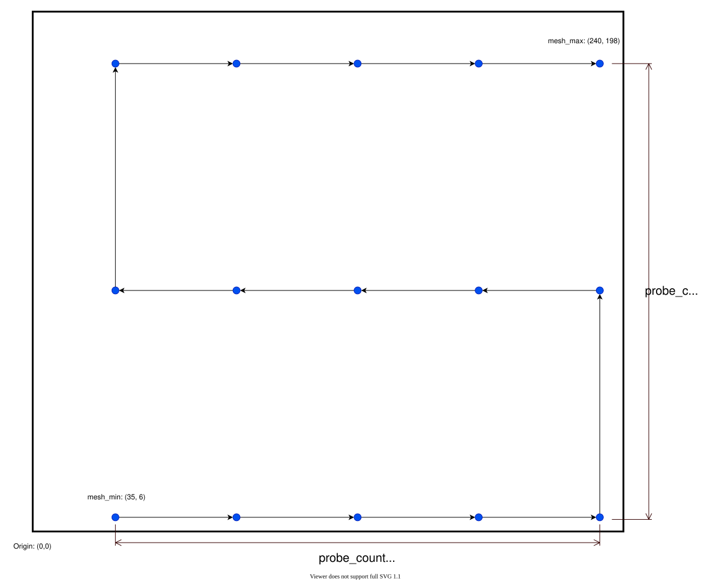
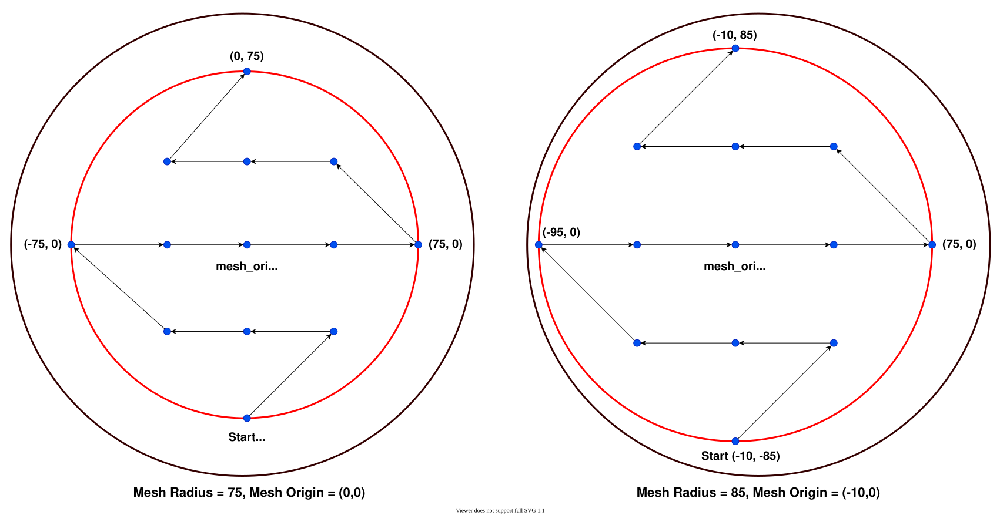
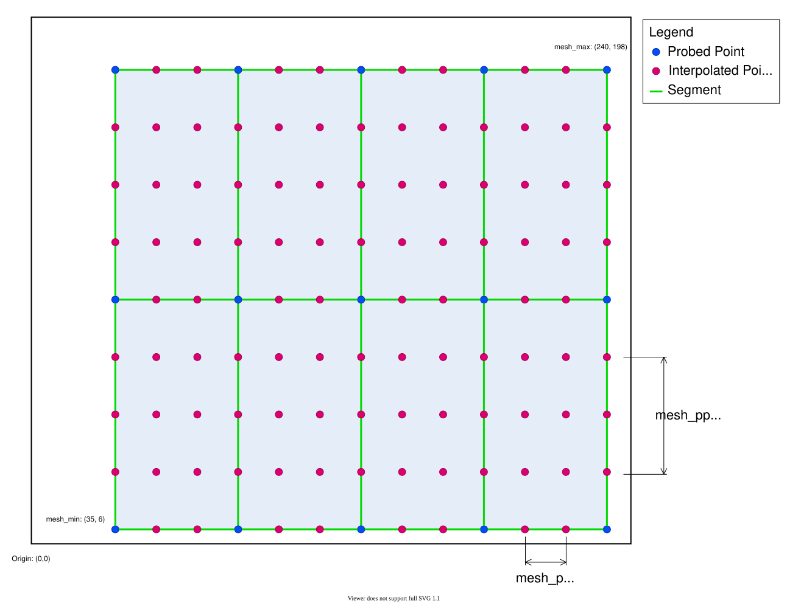
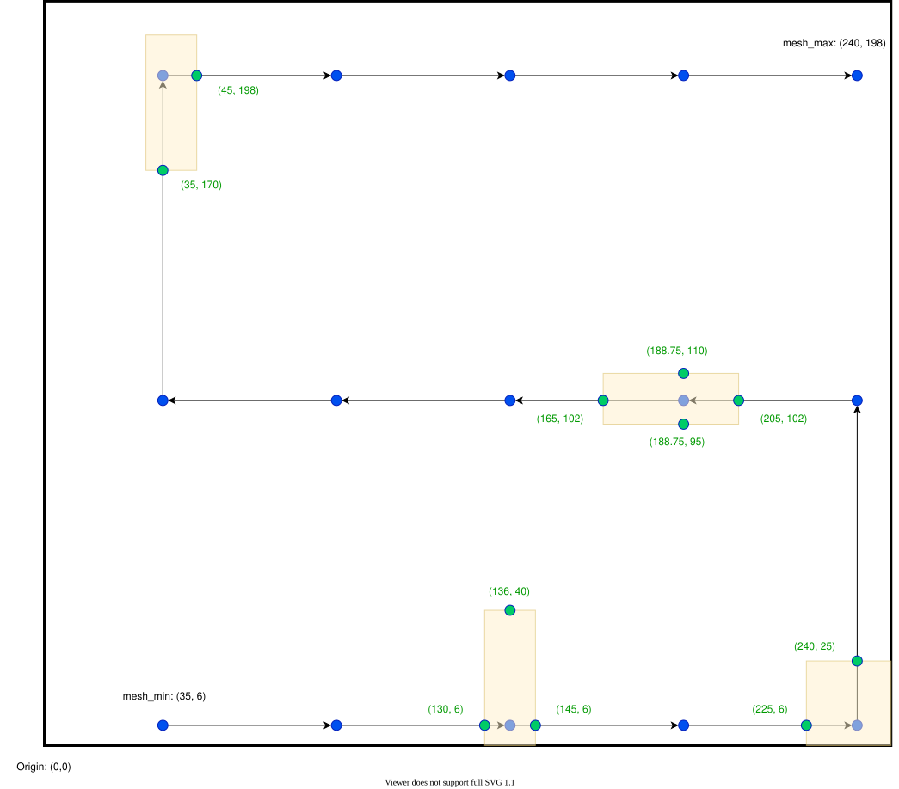
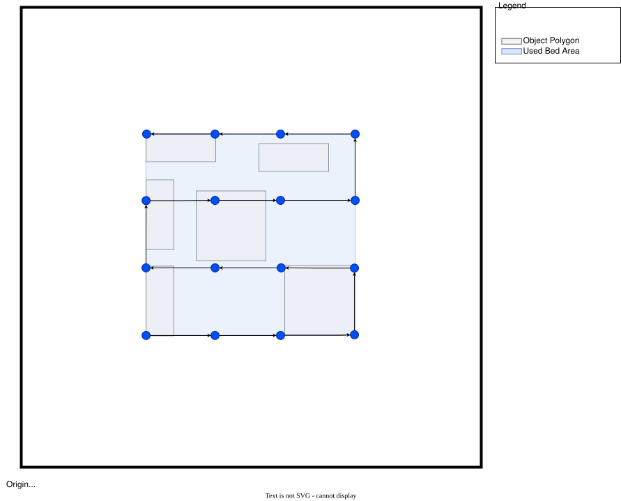
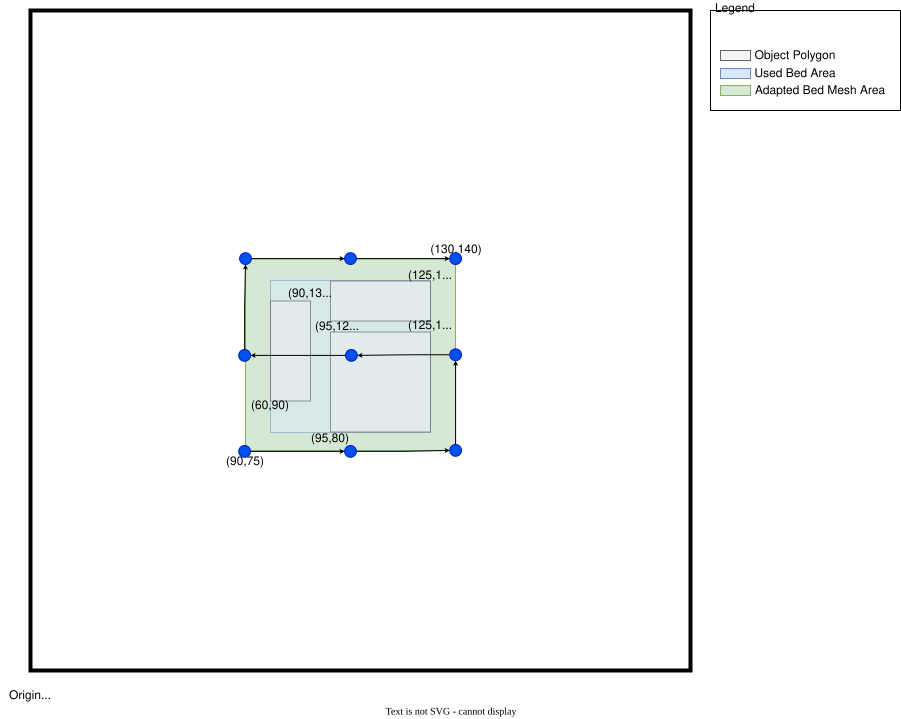

Bettgitter¶
Das Bed-Mesh-Modul kann verwendet werden, um Unebenheiten der Bettoberfläche auszugleichen und so eine bessere erste Schicht über das gesamte Bett hinweg zu erreichen. Beachten Sie, dass eine softwarebasierte Korrektur keine perfekten Ergebnisse liefern kann, sie kann die Form des Bettes nur annähern. Bed Mesh kann außerdem keine mechanischen und elektrischen Probleme ausgleichen. Wenn eine Achse verzogen ist oder eine Sonde ungenau arbeitet, erhält das Modul bed_mesh keine genauen Ergebnisse aus dem Abtastvorgang.
Vor der Mesh-Kalibrierung müssen Sie sicherstellen, dass der Z-Offset Ihrer Sonde kalibriert ist. Wenn Sie einen Endschalter für das Z-Homing verwenden, muss dieser ebenfalls kalibriert werden. Weitere Informationen finden Sie unter Probe Calibrate und zu Z_ENDSTOP_CALIBRATE unter Manual Level.
Grundlegende Konfiguration¶
Rechteckiges Druckbett¶
Dieses Beispiel geht von einem Drucker mit einem rechteckigen Bett von 250 mm x 220 mm und einem Taster mit einem x-Versatz von 24 mm und einem y-Versatz von 5 mm aus.
[bed_mesh]
speed: 120
horizontal_move_z: 5
mesh_min: 35, 6
mesh_max: 240, 198
probe_count: 5, 3
speed: 120Standardwert: 50 Die Geschwindigkeit, mit der sich der Druckkopf zwischen den Punkten bewegt.horizontal_move_z: 5Standardwert: 5 Die Z-Koordinate, auf die der Messtaster ansteigt, bevor er sich zwischen Punkten bewegt.mesh_min: 35, 6Erforderlich Die erste abgetastete Koordinate, dem Ursprung am nächsten. Diese Koordinate bezieht sich auf die Position der Sonde.mesh_max: 240, 198Erforderlich Die vom Ursprung am weitesten entfernte abgetastete Koordinate. Dies ist nicht zwangsläufig der zuletzt abgetastete Punkt, da der Abtastvorgang im Zickzack erfolgt. Wie beimesh_minbezieht sich diese Koordinate auf die Position der Sonde.probe_count: 5, 3Standardwert: 3, 3 Die Anzahl der abzutastenden Punkte je Achse, angegeben als ganzzahlige X- und Y-Werte. In diesem Beispiel werden 5 Punkte entlang der X-Achse und 3 Punkte entlang der Y-Achse abgetastet, also insgesamt 15 Messpunkte. Wenn Sie ein quadratisches Raster wünschen, zum Beispiel 3x3, kann dies als ein einzelner ganzzahliger Wert angegeben werden, der für beide Achsen gilt, alsoprobe_count: 3. Beachten Sie, dass ein Mesh mindestens einen probe_count von 3 je Achse erfordert.
Die folgende Abbildung veranschaulicht, wie die Optionen mesh_min, mesh_max und probe_count zur Erzeugung der Messpunkte verwendet werden. Die Pfeile zeigen die Richtung des Abtastvorgangs an, beginnend bei mesh_min. Zur Orientierung: Wenn sich die Sonde bei mesh_min befindet, steht die Düse bei (11, 1), und wenn die Sonde bei mesh_max steht, befindet sich die Düse bei (206, 193).

Runde Betten¶
Dieses Beispiel geht von einem Drucker mit rundem Bett und einem Radius von 100 mm aus. Wir verwenden dieselben Sonden-Offsets wie im rechteckigen Beispiel: 24 mm auf X und 5 mm auf Y.
[bed_mesh]
speed: 120
horizontal_move_z: 5
mesh_radius: 75
mesh_origin: 0, 0
round_probe_count: 5
mesh_radius: 75Erforderlich Der Radius des abgetasteten Meshes in mm, relativ zummesh_origin. Beachten Sie, dass die Offsets der Sonde die Größe des Mesh-Radius begrenzen. In diesem Beispiel würde ein Radius größer als 76 den Druckkopf über den Verfahrbereich des Druckers hinaus bewegen.mesh_origin: 0, 0Standardwert: 0, 0 Der Mittelpunkt des Meshes. Diese Koordinate bezieht sich auf die Position der Sonde. Der Standardwert ist zwar 0, 0, es kann jedoch sinnvoll sein, den Ursprung zu verschieben, um einen größeren Teil des Bettes abzutasten. Siehe die folgende Abbildung.round_probe_count: 5Standardwert: 5 Dies ist ein ganzzahliger Wert, der die maximale Anzahl der abgetasteten Punkte entlang der X- und Y-Achse festlegt. Mit "maximal" ist die Anzahl der Punkte gemeint, die entlang des Mesh-Ursprungs abgetastet werden. Dieser Wert muss ungerade sein, da der Mittelpunkt des Meshes zwingend abgetastet werden muss.
Die folgende Abbildung zeigt, wie die Messpunkte erzeugt werden. Wie Sie sehen, ermöglicht es das Setzen von mesh_origin auf (-10, 0), einen größeren Mesh-Radius von 85 anzugeben.

Erweiterte Konfiguration¶
Nachfolgend werden die erweiterten Konfigurationsoptionen im Detail erläutert. Jedes Beispiel baut auf der oben gezeigten einfachen Konfiguration für rechteckige Betten auf. Alle erweiterten Optionen gelten in gleicher Weise für runde Betten.
Netz Interpolierung¶
Zwar lässt sich die abgetastete Matrix mit einfacher bilinearer Interpolation direkt abfragen, um die Z-Werte zwischen den Messpunkten zu bestimmen, oft ist es jedoch sinnvoll, mit fortgeschritteneren Interpolationsalgorithmen zusätzliche Punkte zu berechnen und so die Dichte des Meshes zu erhöhen. Diese Algorithmen fügen dem Mesh eine Krümmung hinzu und versuchen so, die Materialeigenschaften des Bettes nachzubilden. Bed Mesh bietet dafür die Lagrange- und die bikubische Interpolation an.
[bed_mesh]
speed: 120
horizontal_move_z: 5
mesh_min: 35, 6
mesh_max: 240, 198
probe_count: 5, 3
mesh_pps: 2, 3
algorithm: bicubic
bicubic_tension: 0.2
mesh_pps: 2, 3Standardwert: 2, 2 Die Optionmesh_ppsist die Kurzform für "Mesh Points Per Segment" (Mesh-Punkte pro Segment). Diese Option legt fest, wie viele Punkte für jedes Segment entlang der X- und Y-Achse interpoliert werden. Als "Segment" gilt dabei der Raum zwischen zwei abgetasteten Punkten. Wieprobe_countwirdmesh_ppsals ganzzahliges X,Y-Paar angegeben und kann ebenfalls als einzelner ganzer Wert angegeben werden, der für beide Achsen gilt. In diesem Beispiel gibt es 4 Segmente entlang der X-Achse und 2 Segmente entlang der Y-Achse. Daraus ergeben sich 8 interpolierte Punkte entlang X und 6 interpolierte Punkte entlang Y, was zu einem Mesh von 13x9 führt. Beachten Sie: Ist mesh_pps auf 0 gesetzt, wird die Mesh-Interpolation deaktiviert und die abgetastete Matrix direkt abgefragt.algorithm: lagrangeStandardwert: lagrange Der Algorithmus, der zur Interpolation des Meshes verwendet wird. Möglich sindlagrangeoderbicubic. Die Lagrange-Interpolation ist auf 6 abgetastete Punkte begrenzt, da bei einer größeren Anzahl von Messpunkten Oszillationen auftreten. Die bikubische Interpolation erfordert mindestens 4 abgetastete Punkte je Achse; werden weniger als 4 Punkte angegeben, wird zwingend die Lagrange-Abtastung verwendet. Istmesh_ppsauf 0 gesetzt, wird dieser Wert ignoriert, da keine Mesh-Interpolation stattfindet.bicubic_tension: 0.2Standardwert: 0.2 Wenn die Optionalgorithmauf bicubic gesetzt ist, kann der Tension-Wert angegeben werden. Je höher die Tension, desto stärker wird die Steigung interpoliert. Seien Sie bei der Anpassung vorsichtig, da höhere Werte auch zu mehr Überschwingen führen, wodurch interpolierte Werte ober- oder unterhalb Ihrer abgetasteten Punkte entstehen.
Die folgende Abbildung zeigt, wie die oben genannten Optionen zur Erzeugung eines interpolierten Meshes verwendet werden.

Aufteilung von Bewegungen¶
Bed Mesh funktioniert, indem es G-Code-Bewegungsbefehle abfängt und deren Z-Koordinate transformiert. Lange Bewegungen müssen in kleinere Bewegungen aufgeteilt werden, um der Form des Bettes korrekt zu folgen. Die folgenden Optionen steuern das Aufteilungsverhalten.
[bed_mesh]
speed: 120
horizontal_move_z: 5
mesh_min: 35, 6
mesh_max: 240, 198
probe_count: 5, 3
move_check_distance: 5
split_delta_z: .025
move_check_distance: 5Standardwert: 5 Der Mindestabstand, in dem auf die gewünschte Z-Änderung geprüft wird, bevor eine Aufteilung erfolgt. In diesem Beispiel wird eine Bewegung, die länger als 5 mm ist, vom Algorithmus schrittweise durchlaufen. Alle 5 mm erfolgt eine Mesh-Z-Abfrage, die mit dem Z-Wert der vorherigen Bewegung verglichen wird. Erreicht die Differenz den durchsplit_delta_zfestgelegten Schwellwert, wird die Bewegung aufgeteilt und der Durchlauf fortgesetzt. Dieser Vorgang wiederholt sich bis zum Ende der Bewegung, wo eine abschließende Korrektur angewendet wird. Bei Bewegungen, die kürzer alsmove_check_distancesind, wird die korrekte Z-Korrektur ohne Durchlauf oder Aufteilung direkt auf die Bewegung angewendet.split_delta_z: .025Standardwert: .025 Wie oben erwähnt, ist dies die minimale Abweichung, die eine Aufteilung der Bewegung auslöst. In diesem Beispiel löst jeder Z-Wert mit einer Abweichung von +/- 0,025 mm eine Aufteilung aus.
Im Allgemeinen sind die Standardwerte dieser Optionen ausreichend, tatsächlich ist der Standardwert von 5 mm für move_check_distance womöglich sogar überdimensioniert. Fortgeschrittene Benutzer möchten jedoch vielleicht mit diesen Optionen experimentieren, um die optimale erste Schicht herauszuholen.
Mesh Fade¶
Wenn "Fade" aktiviert ist, wird die Z-Korrektur über eine in der Konfiguration festgelegte Distanz ausgeblendet. Dies geschieht durch geringfügige Anpassungen der Schichthöhe, die je nach Form des Bettes vergrößert oder verkleinert wird. Ist der Fade-Vorgang abgeschlossen, wird keine Z-Korrektur mehr angewendet, sodass die Oberseite des Drucks flach ist und nicht die Form des Bettes nachbildet. Fade kann jedoch auch unerwünschte Nebenwirkungen haben: Wird zu schnell ausgeblendet, können sichtbare Artefakte auf dem Druck entstehen. Außerdem kann Fade bei einem stark verzogenen Bett die Z-Höhe des Drucks stauchen oder strecken. Aus diesem Grund ist Fade standardmäßig deaktiviert.
[bed_mesh]
speed: 120
horizontal_move_z: 5
mesh_min: 35, 6
mesh_max: 240, 198
probe_count: 5, 3
fade_start: 1
fade_end: 10
fade_target: 0
fade_start: 1Standardwert: 1 Die Z-Höhe, ab der die Korrektur ausgeblendet werden soll. Es ist sinnvoll, zunächst einige Schichten zu drucken, bevor der Fade-Vorgang beginnt.fade_end: 10Standardwert: 0 Die Z-Höhe, bei der der Fade-Vorgang abgeschlossen sein soll. Ist dieser Wert kleiner alsfade_start, ist Fade deaktiviert. Dieser Wert kann abhängig davon angepasst werden, wie stark die Druckoberfläche verzogen ist. Eine deutlich verzogene Oberfläche sollte über eine längere Distanz ausgeblendet werden. Bei einer nahezu ebenen Oberfläche kann dieser Wert verringert werden, um schneller auszublenden. 10 mm ist ein sinnvoller Ausgangswert, wenn fürfade_startder Standardwert 1 verwendet wird.fade_target: 0Standardwert: der durchschnittliche Z-Wert des Meshes Derfade_targetkann als zusätzlicher Z-Offset verstanden werden, der nach Abschluss des Fade-Vorgangs auf das gesamte Bett angewendet wird. Grundsätzlich sollte dieser Wert 0 betragen, es gibt jedoch Situationen, in denen das nicht sinnvoll ist. Nehmen wir zum Beispiel an, Ihre Homing-Position auf dem Bett ist ein Ausreißer und liegt 0,2 mm unter der durchschnittlichen abgetasteten Höhe des Bettes. Istfade_targetgleich 0, verkleinert Fade den Druck über das Bett hinweg um durchschnittlich 0,2 mm. Wirdfade_targetauf 0.2 gesetzt, dehnt sich der Bereich um die Homing-Position um 0,2 mm aus, der Rest des Bettes erhält jedoch die korrekten Maße. In der Regel ist es sinnvoll,fade_targetin der Konfiguration wegzulassen, sodass die durchschnittliche Höhe des Meshes verwendet wird. Eine manuelle Anpassung des Fade-Ziels kann jedoch wünschenswert sein, wenn auf einem bestimmten Teil des Bettes gedruckt werden soll.
Konfigurieren der Nullpunktposition¶
Viele Sonden neigen zur "Drift", also zu Messungenauigkeiten durch Wärme oder Störeinflüsse. Das kann die Bestimmung des Z-Offsets der Sonde erschweren, insbesondere bei unterschiedlichen Betttemperaturen. Aus diesem Grund verwenden manche Drucker einen Endschalter für das Homing der Z-Achse und eine Sonde zum Kalibrieren des Meshes. In dieser Konfiguration kann das Mesh so verschoben werden, dass an der (X, Y)-reference position keine Korrektur angewendet wird. Die reference position sollte die Stelle auf dem Bett sein, an der ein Papiertest gemäß Z_ENDSTOP_CALIBRATE durchgeführt wird. Das Modul bed_mesh stellt zur Angabe dieser Koordinate die Option zero_reference_position bereit:
[bed_mesh]
speed: 120
horizontal_move_z: 5
mesh_min: 35, 6
mesh_max: 240, 198
zero_reference_position: 125, 110
probe_count: 5, 3
zero_reference_position:Standardwert: None (deaktiviert)zero_reference_positionerwartet eine (X, Y)-Koordinate, die der oben beschriebenenreference positionentspricht. Liegt die Koordinate innerhalb des Meshes, wird das Mesh so verschoben, dass an der Referenzposition keine Korrektur angewendet wird. Liegt die Koordinate außerhalb des Meshes, wird sie nach der Kalibrierung abgetastet und der resultierende Z-Wert als Z-Offset verwendet. Beachten Sie, dass diese Koordinate NICHT in einem alsfaulty_regionfestgelegten Bereich liegen darf, falls eine Messung erforderlich ist.
Fehlerhafte Regionen¶
Manche Bereiche eines Bettes können aufgrund eines "Fehlers" an bestimmten Stellen ungenaue Messergebnisse liefern. Das beste Beispiel hierfür sind Betten mit einer Reihe integrierter Magnete, die zum Halten abnehmbarer Stahlbleche dienen. Das Magnetfeld an und um diese Magnete kann dazu führen, dass eine induktive Sonde in einem größeren oder kleineren Abstand auslöst als sonst, wodurch ein Mesh entsteht, das die Oberfläche an diesen Stellen nicht korrekt abbildet. Hinweis: Dies ist nicht zu verwechseln mit einem systematischen Versatz der Sonde, der über das gesamte Bett hinweg ungenaue Ergebnisse erzeugt.
Die Optionen faulty_region können konfiguriert werden, um diesen Effekt auszugleichen. Liegt ein erzeugter Punkt innerhalb eines fehlerhaften Bereichs, versucht Bed Mesh, bis zu 4 Punkte an den Grenzen dieses Bereichs abzutasten. Aus diesen Messwerten wird der Mittelwert gebildet und als Z-Wert an der erzeugten (X, Y)-Koordinate in das Mesh eingefügt.
[bed_mesh]
speed: 120
horizontal_move_z: 5
mesh_min: 35, 6
mesh_max: 240, 198
probe_count: 5, 3
faulty_region_1_min: 130.0, 0.0
faulty_region_1_max: 145.0, 40.0
faulty_region_2_min: 225.0, 0.0
faulty_region_2_max: 250.0, 25.0
faulty_region_3_min: 165.0, 95.0
faulty_region_3_max: 205.0, 110.0
faulty_region_4_min: 30.0, 170.0
faulty_region_4_max: 45.0, 210.0
faulty_region_{1...99}_minfaulty_region_{1..99}_maxStandardwert: None (deaktiviert) Fehlerhafte Bereiche werden ähnlich wie das Mesh selbst definiert, indem für jeden Bereich minimale und maximale (X, Y)-Koordinaten angegeben werden. Ein fehlerhafter Bereich darf über das Mesh hinausragen, die erzeugten Ersatzpunkte liegen jedoch immer innerhalb der Mesh-Grenzen. Zwei Bereiche dürfen sich nicht überlappen.
Die folgende Abbildung veranschaulicht, wie Ersatzpunkte erzeugt werden, wenn ein erzeugter Punkt innerhalb eines fehlerhaften Bereichs liegt. Die dargestellten Bereiche entsprechen denen der obigen Beispielkonfiguration. Die Ersatzpunkte und ihre Koordinaten sind grün gekennzeichnet.

Adaptive Netze¶
Adaptives Bed Meshing ist eine Möglichkeit, die Erzeugung des Bed Mesh zu beschleunigen, indem nur der Bereich des Bettes abgetastet wird, der von den zu druckenden Objekten genutzt wird. Bei dieser Methode werden die Mesh-Parameter automatisch anhand der von den definierten Druckobjekten belegten Fläche angepasst.
Der angepasste Mesh-Bereich wird aus der Fläche berechnet, die durch die Grenzen aller definierten Druckobjekte aufgespannt wird, sodass er jedes Objekt einschließlich der in der Konfiguration festgelegten Ränder abdeckt. Nach der Berechnung des Bereichs wird die Anzahl der Messpunkte anhand des Verhältnisses zwischen dem Standard-Mesh-Bereich und dem angepassten Mesh-Bereich verringert. Zur Veranschaulichung betrachten Sie das folgende Beispiel:
Bei einem 150 mm x 150 mm großen Bett mit mesh_min auf 25,25 und mesh_max auf 125,125 ist der Standard-Mesh-Bereich ein Quadrat von 100 mm x 100 mm. Ein angepasster Mesh-Bereich von 50,50 bedeutet ein Verhältnis von 0.5x0.5 zwischen dem angepassten und dem Standard-Mesh-Bereich.
Wenn in der Konfiguration von bed_mesh der probe_count als 7x7 angegeben ist, verwendet das angepasste Bed Mesh 4x4 Messpunkte (7 * 0,5, aufgerundet).

[bed_mesh]
speed: 120
horizontal_move_z: 5
mesh_min: 35, 6
mesh_max: 240, 198
probe_count: 5, 3
adaptive_margin: 5
-
adaptive_marginStandardwert: 0 Rand (in mm), der um den von den definierten Objekten belegten Bereich des Bettes hinzugefügt wird. Die folgende Abbildung zeigt den angepassten Bed-Mesh-Bereich mit einemadaptive_marginvon 5 mm. Der angepasste Mesh-Bereich (grüne Fläche) ergibt sich aus der genutzten Bettfläche (blaue Fläche) zuzüglich des festgelegten Randes.
Adaptive Bed Meshes basieren naturgemäß auf den Objekten, die in der gerade gedruckten G-Code-Datei definiert sind. Daher ist zu erwarten, dass jede G-Code-Datei ein Mesh erzeugt, das einen anderen Bereich des Druckbetts abtastet. Angepasste Bed Meshes sollten deshalb nicht wiederverwendet werden. Bei Verwendung des adaptiven Meshings wird davon ausgegangen, dass für jeden Druck ein neues Mesh erzeugt wird.
Ebenso wichtig ist zu beachten, dass adaptives Bed Meshing am besten auf Maschinen eingesetzt wird, die normalerweise das gesamte Bett abtasten können und dabei eine maximale Abweichung von höchstens einer Schichthöhe erreichen. Bei Maschinen mit mechanischen Problemen, die ein vollständiges Bed Mesh normalerweise ausgleicht, kann es bei Druckbewegungen außerhalb des abgetasteten Bereichs zu unerwünschten Ergebnissen kommen. Weist ein vollständiges Bed Mesh eine Abweichung von mehr als einer Schichthöhe auf, ist bei der Verwendung adaptiver Bed Meshes und bei Druckbewegungen außerhalb des abgetasteten Bereichs Vorsicht geboten.
Oberflächen-Scans¶
Einige Sonden, etwa die Eddy Current Probe, können die Oberfläche des Bettes "scannen". Das heißt, diese Sonden können ein Mesh abtasten, ohne den Druckkopf zwischen den Messungen anzuheben. Um den Scan-Modus zu aktivieren, sollte der Sonden-Parameter METHOD=scan oder METHOD=rapid_scan an den G-Code-Befehl BED_MESH_CALIBRATE übergeben werden.
Scan-Höhe¶
Die Scan-Höhe wird über die Option horizontal_move_z in [bed_mesh] festgelegt. Zusätzlich kann sie dem G-Code-Befehl BED_MESH_CALIBRATE über den Parameter HORIZONTAL_MOVE_Z übergeben werden.
Die Scan-Höhe muss ausreichend niedrig sein, um Scanfehler zu vermeiden. In der Regel funktioniert eine Höhe von 2 mm (also HORIZONTAL_MOVE_Z=2) gut, sofern die Sonde korrekt montiert ist.
Beachten Sie, dass die Ergebnisse ungültig sind, wenn sich die Sonde mehr als 4 mm über der Oberfläche befindet. Ein Scan ist daher bei Betten mit starken Oberflächenabweichungen oder bei extrem geneigten, nicht korrigierten Betten nicht möglich.
Schnelles (kontinuierliches) Scannen¶
Beim Durchführen eines rapid_scan sollten Sie bedenken, dass die Ergebnisse einen gewissen Fehler aufweisen. Dieser Fehler sollte gering genug sein, um bei großen Druckflächen mit ausreichend dicken Schichthöhen brauchbar zu sein. Manche Sonden sind fehleranfälliger als andere.
Es wird nicht empfohlen, den Schnellmodus zum Abtasten eines "dichten" Meshes zu verwenden. Ein Teil des beim Schnellscan entstehenden Fehlers kann gaußsches Rauschen des Sensors sein, und ein dichtes Mesh gibt dieses Rauschen wieder (es entstehen also Erhebungen und Senken).
Bed Mesh versucht, den Verfahrweg zu optimieren, um auf Basis der Konfiguration das bestmögliche Ergebnis zu erzielen. Dazu gehört, fehlerhafte Bereiche bei der Erfassung von Messwerten zu meiden und beim Richtungswechsel über das Mesh hinauszufahren. Dieses Überfahren verbessert die Abtastung an den Rändern eines Meshes, setzt jedoch voraus, dass das Mesh so konfiguriert ist, dass der Druckkopf über das Mesh hinausfahren kann.
[bed_mesh]
speed: 120
horizontal_move_z: 5
mesh_min: 35, 6
mesh_max: 240, 198
probe_count: 5
scan_overshoot: 8
scan_overshootStandardwert: 0 (deaktiviert) Der maximal verfügbare Verfahrweg (in mm) außerhalb des Meshes. Bei rechteckigen Betten gilt dies für den Verfahrweg auf der X-Achse, bei runden Betten für den gesamten Radius. Der Druckkopf muss den angegebenen Weg außerhalb des Meshes zurücklegen können. Dieser Wert dient der Optimierung des Verfahrwegs beim "Schnellscan". Der kleinste zulässige Wert ist 1. Standardmäßig wird nicht über das Mesh hinausgefahren.
Ist kein Scan-Überfahrweg konfiguriert, wird bei Richtungswechseln keine Optimierung des Verfahrwegs angewendet.
Bett Netz Gcodes¶
Kalibrierung¶
BED_MESH_CALIBRATE PROFILE=<name> METHOD=[manual | automatic | scan | rapid_scan] \ [<probe_parameter>=<value>] [<mesh_parameter>=<value>] [ADAPTIVE=[0|1] \ [ADAPTIVE_MARGIN=<value>] Standardprofil: default Standardmethode: automatic, wenn eine Sonde erkannt wird, andernfalls manual Standardwert Adaptive: 0 Standardwert Adaptive Margin: 0
Startet den Abtastvorgang für die Bed-Mesh-Kalibrierung.
Nach Abschluss des Befehls ist das Mesh sofort einsatzbereit und wird in dem über den Parameter PROFILE angegebenen Profil gespeichert, oder in default, wenn nichts angegeben wurde. Der Parameter METHOD nimmt einen der folgenden Werte an:
METHOD=manual: Aktiviert das manuelle Abtasten mit der Düse und dem PapiertestMETHOD=automatic: Automatisches (übliches) Abtasten. Dies ist die Standardeinstellung.METHOD=scan: Aktiviert das Scannen der Oberfläche. Der Druckkopf hält an jeder Position an, um einen Messwert zu erfassen.METHOD=rapid_scan: Aktiviert das kontinuierliche Scannen der Oberfläche.
Die XY-Positionen werden automatisch um die X- und/oder Y-Offsets korrigiert, wenn eine andere Abtastmethode als manual gewählt wird.
Es ist möglich, Mesh-Parameter anzugeben, um den abgetasteten Bereich zu verändern. Die folgenden Parameter stehen zur Verfügung:
- Rechteckige Druckbette (cartesian):
MESH_MINMESH_MAXPROBE_COUNT
- Runde Druckbette (delta):
MESH_RADIUSMESH_ORIGINROUND_PROBE_COUNT
- Alle Betten:
MESH_PPSALGORITHMADAPTIVEADAPTIVE_MARGIN
Einzelheiten dazu, wie sich die einzelnen Parameter auf das Mesh auswirken, finden Sie in der Konfigurationsdokumentation oben.
Profile¶
BED_MESH_PROFILE SAVE=<name> LOAD=<name> REMOVE=<name>
Nachdem ein BED_MESH_CALIBRATE durchgeführt wurde, kann der aktuelle Mesh-Zustand in einem benannten Profil gespeichert werden. Dadurch lässt sich ein Mesh laden, ohne das Bett erneut abzutasten. Nachdem ein Profil mit BED_MESH_PROFILE SAVE=<name> gespeichert wurde, kann der G-Code-Befehl SAVE_CONFIG ausgeführt werden, um das Profil in die printer.cfg zu schreiben.
Profile können durch Ausführen von BED_MESH_PROFILE LOAD=<name> geladen werden.
Beachten Sie, dass bei jedem BED_MESH_CALIBRATE der aktuelle Zustand automatisch im Profil default gespeichert wird. Das Profil default kann wie folgt entfernt werden:
BETT_MESH_PROFIL ENTFERNEN=standard
Jedes andere gespeicherte Profil kann auf die gleiche Weise entfernt werden, indem default durch den Namen des zu entfernenden Profils ersetzt wird.
Laden des Standardprofils¶
Frühere Versionen von bed_mesh haben beim Start immer das Profil default geladen, sofern es vorhanden war. Dieses Verhalten wurde entfernt, damit der Benutzer selbst bestimmen kann, wann ein Profil geladen wird. Wenn Sie das Profil default laden möchten, empfiehlt es sich, BED_MESH_PROFILE LOAD=default entweder zum Makro START_PRINT oder zur "Start-G-Code"-Konfiguration Ihres Slicers hinzuzufügen, je nachdem, was zutrifft.
Beachten Sie, dass dies nicht erforderlich ist, wenn im Makro START_PRINT oder im "Start-G-Code" des Slicers mit BED_MESH_CALIBRATE ein neues Mesh erzeugt wird; es kann dann zu unerwarteten Ergebnissen führen, insbesondere beim adaptiven Meshing.
Alternativ lässt sich das alte Verhalten, ein Profil beim Start zu laden, mit einem [delayed_gcode] wiederherstellen:
[delayed_gcode bed_mesh_init]
initial_duration: .01
gcode:
BED_MESH_PROFILE LOAD=default
Ausgabe¶
BED_MESH_OUTPUT PGP=[0 | 1]
Gibt den aktuellen Mesh-Zustand im Terminal aus. Beachten Sie, dass das Mesh selbst ausgegeben wird
Der Parameter PGP ist die Kurzform für "Print Generated Points" (erzeugte Punkte ausgeben). Ist PGP=1 gesetzt, werden die erzeugten Messpunkte im Terminal ausgegeben:
// bed_mesh: generated points
// Index | Tool Adjusted | Probe
// 0 | (11.0, 1.0) | (35.0, 6.0)
// 1 | (62.2, 1.0) | (86.2, 6.0)
// 2 | (113.5, 1.0) | (137.5, 6.0)
// 3 | (164.8, 1.0) | (188.8, 6.0)
// 4 | (216.0, 1.0) | (240.0, 6.0)
// 5 | (216.0, 97.0) | (240.0, 102.0)
// 6 | (164.8, 97.0) | (188.8, 102.0)
// 7 | (113.5, 97.0) | (137.5, 102.0)
// 8 | (62.2, 97.0) | (86.2, 102.0)
// 9 | (11.0, 97.0) | (35.0, 102.0)
// 10 | (11.0, 193.0) | (35.0, 198.0)
// 11 | (62.2, 193.0) | (86.2, 198.0)
// 12 | (113.5, 193.0) | (137.5, 198.0)
// 13 | (164.8, 193.0) | (188.8, 198.0)
// 14 | (216.0, 193.0) | (240.0, 198.0)
Die Punkte "Tool Adjusted" beziehen sich auf die Position der Düse für den jeweiligen Punkt, die Punkte "Probe" auf die Position der Sonde. Beachten Sie, dass sich die "Probe"-Punkte beim manuellen Abtasten sowohl auf die Position des Druckkopfs als auch auf die der Düse beziehen.
Mesh-Zustand zurücksetzen¶
BED_MESH_CLEAR
Dieser G-code kann verwendet werden, um den internen Mesh-Zustand zu löschen.
X/Y Offsets anwenden¶
BED_MESH_OFFSET [X=<value>] [Y=<value>] [ZFADE=<value>]
Dies ist nützlich für Drucker mit mehreren unabhängigen Extrudern, da ein Offset erforderlich ist, um nach einem Werkzeugwechsel eine korrekte Z-Korrektur zu erhalten. Offsets sollten relativ zum primären Extruder angegeben werden. Das heißt: Ein positiver X-Offset ist anzugeben, wenn der sekundäre Extruder rechts vom primären Extruder montiert ist, ein positiver Y-Offset, wenn der sekundäre Extruder "hinter" dem primären montiert ist, und ein positiver ZFADE-Offset, wenn die Düse des sekundären Extruders höher liegt als die des primären.
Beachten Sie, dass ein ZFADE-Offset NICHT direkt eine zusätzliche Korrektur bewirkt. Er dient dazu, einen gcode offset auszugleichen, wenn Mesh Fade aktiviert ist. Wenn zum Beispiel ein sekundärer Extruder höher liegt als der primäre und einen negativen G-Code-Offset benötigt, also SET_GCODE_OFFSET Z=-.2, kann dies in bed_mesh mit BED_MESH_OFFSET ZFADE=.2 berücksichtigt werden.
Webhooks-APIs von Bed Mesh¶
Mesh-Daten ausgeben¶
{"id": 123, "method": "bed_mesh/dump_mesh"}
Gibt die Konfiguration und den Zustand des aktuellen Meshes sowie aller gespeicherten Profile aus.
Der Endpunkt dump_mesh nimmt einen optionalen Parameter mesh_args entgegen. Dieser Parameter muss ein Objekt sein, dessen Schlüssel und Werte den für BED_MESH_CALIBRATE verfügbaren Parametern entsprechen. Damit werden die Mesh-Konfiguration und die Messpunkte anhand der übergebenen Parameter aktualisiert, bevor das Ergebnis zurückgegeben wird. Es empfiehlt sich, Mesh-Parameter wegzulassen, sofern Sie nicht die Messpunkte und/oder den Verfahrweg vor der Ausführung von BED_MESH_CALIBRATE sichtbar machen möchten.
Visualisierung und Analyse¶
Die meisten Benutzer werden feststellen, dass die in Anwendungen wie Mainsail, Fluidd und Octoprint enthaltenen Visualisierungen für eine grundlegende Analyse ausreichen. Der Ordner scripts von Klipper enthält jedoch das Skript graph_mesh.py, mit dem sich weitere Visualisierungen und detailliertere Analysen durchführen lassen. Das ist besonders nützlich, um Hardware oder die von bed_mesh erzeugten Ergebnisse zu untersuchen:
usage: graph_mesh.py [-h] {list,plot,analyze,dump} ...
Graph Bed Mesh Data
positional arguments:
{list,plot,analyze,dump}
list List available plot types
plot Plot a specified type
analyze Perform analysis on mesh data
dump Dump API response to json file
options:
-h, --help show this help message and exit
Voraussetzungen¶
Wie die meisten von Klipper bereitgestellten Diagrammwerkzeuge benötigt graph_mesh.py die Python-Abhängigkeiten matplotlib und numpy. Zusätzlich erfordert die Verbindung zu Klipper über den Websocket von Moonraker die Python-Abhängigkeit websockets. Alle Visualisierungen können zwar in eine svg-Datei ausgegeben werden, die meisten von graph_mesh.py angebotenen Darstellungen lassen sich jedoch besser in der Live-Vorschau auf einem Desktop-PC betrachten. So können die 3D-Visualisierungen im Vorschaumodus gedreht und gezoomt werden, und die Verfahrweg-Darstellungen lassen sich im Vorschaumodus optional animieren.
Mesh-Daten grafisch darstellen¶
Das Werkzeug graph_mesh.py kann verschiedene Arten von Visualisierungen erzeugen. Die verfügbaren Typen lassen sich mit graph_mesh.py list anzeigen:
graph_mesh.py list
points Plot original generated points
path Plot probe travel path
rapid Plot rapid scan travel path
probedz Plot probed Z values
meshz Plot mesh Z values
overlay Plots the current probed mesh overlaid with a profile
delta Plots the delta between current probed mesh and a profile
Beim Erstellen von Visualisierungen stehen mehrere Optionen zur Verfügung:
usage: graph_mesh.py plot [-h] [-a] [-s] [-p PROFILE_NAME] [-o OUTPUT] <plot type> <input>
positional arguments:
<plot type> Type of data to graph
<input> Path/url to Klipper Socket or path to json file
options:
-h, --help show this help message and exit
-a, --animate Animate paths in live preview
-s, --scale-plot Use axis limits reported by Klipper to scale plot X/Y
-p PROFILE_NAME, --profile-name PROFILE_NAME
Optional name of a profile to plot for 'probedz'
-o OUTPUT, --output OUTPUT
Output file path
Nachfolgend eine Beschreibung der einzelnen Argumente:
plot type: Ein erforderliches Positionsargument, das die Art der zu erzeugenden Visualisierung angibt. Es muss einer der Typen sein, die der Befehlgraph_mesh.py listausgibt.input: Ein erforderliches Positionsargument mit einem Pfad oder einer URL zur Eingabequelle. Dies muss eines der Folgenden sein:- Ein Pfad zum Unix Domain Socket von Klipper
- Eine URL zu einer Moonraker-Instanz
- Ein Pfad zu einer JSON-Datei, die von
graph_mesh.py dump <input>erzeugt wurde
-a: Optionale Animation für die Visualisierungstypenpathundrapid. Animationen gelten nur für die Live-Vorschau.-s: Skaliert die Darstellung optional anhand der Werteaxis_minimumundaxis_maximum, die vomtoolhead-Objekt von Klipper beim Erzeugen der Dump-Datei gemeldet wurden.-p: Ein Profilname, der beim Erzeugen der 3D-Mesh-Visualisierungprobedzangegeben werden kann. Beim Erzeugen eineroverlay- oderdelta-Visualisierung muss dieses Argument angegeben werden.-o: Ein optionaler Dateipfad, der angibt, dass das Skript die Visualisierung an diesem Ort speichern soll, statt im Vorschaumodus zu laufen. Bilder werden imsvg-Format gespeichert.
Um beispielsweise einen animierten Schnellscan-Pfad darzustellen und sich dabei über den Unix-Socket von Klipper zu verbinden:
graph_mesh.py plot -a rapid ~/printer_data/comms/klippy.sock
Oder um eine 3D-Visualisierung des Meshes darzustellen und sich dabei über Moonraker zu verbinden:
graph_mesh.py plot meshz http://my-printer.local
Bed-Mesh-Analyse¶
Das Werkzeug graph_mesh.py kann außerdem verwendet werden, um eine Analyse der von der API bed_mesh/dump_mesh gelieferten Daten durchzuführen:
graph_mesh.py analyze <input>
Wie beim Befehl plot muss <input> ein Pfad zum Unix-Socket von Klipper, eine URL zu einer Moonraker-Instanz oder ein Pfad zu einer JSON-Datei sein, die mit dem Befehl dump erzeugt wurde.
Zu Beginn führt die Analyse verschiedene Prüfungen der Punkte und Abtastwege durch, die bed_mesh zum Zeitpunkt des Dumps erzeugt hat. Dazu gehört Folgendes:
- Die Anzahl der erzeugten Messpunkte ohne jegliche Ergänzungen
- Die Anzahl der erzeugten Messpunkte einschließlich aller Punkte, die aufgrund fehlerhafter Bereiche und/oder einer konfigurierten Null-Referenzposition erzeugt wurden.
- Die Anzahl der Messpunkte, die bei einem Schnellscan erzeugt werden.
- Die Gesamtzahl der für einen Schnellscan erzeugten Bewegungen.
- Eine Prüfung, ob die für einen Schnellscan erzeugten Messpunkte mit den Messpunkten eines üblichen Abtastvorgangs übereinstimmen.
- Eine Prüfung auf "Backtracking" sowohl für den üblichen Abtastweg als auch für den Weg eines Schnellscans. Als Backtracking bezeichnet man das mehrfache Anfahren derselben Position während des Abtastvorgangs. Bei einem üblichen Abtastvorgang sollte niemals Backtracking auftreten. Fehlerhafte Bereiche können bei einem Schnellscan zu Backtracking führen, wenn versucht wird, beim Anfahren oder Verlassen einer Messposition nicht in einen fehlerhaften Bereich zu geraten; ansonsten sollte es jedoch nicht vorkommen.
Anschließend wird jedes im Dump enthaltene abgetastete Mesh analysiert, beginnend mit dem zum Zeitpunkt des Dumps geladenen Mesh (sofern vorhanden), gefolgt von allen gespeicherten Profilen. Dabei werden die folgenden Daten ermittelt:
- Form des Meshes (Min X,Y, Max X,Y, Anzahl der Messpunkte)
- Z-Bereich des Meshes (minimales Z, maximales Z)
- Mittlerer Z-Wert im Mesh
- Standardabweichung der Z-Werte im Mesh
Zusätzlich zu den oben genannten Werten wird eine Differenzanalyse zwischen Meshes gleicher Form durchgeführt, die Folgendes ausgibt:
- Der Wertebereich der Differenz zwischen zwei Meshes (Minimum und Maximum)
- Die mittlere Differenz
- Standardabweichung der Differenz
- Die absolute maximale Abweichung
- Der absolute Mittelwert
Mesh-Daten in eine Datei speichern¶
Mit dem Befehl dump kann die Antwort in einer Datei gespeichert werden, die sich bei der Fehlersuche zur Analyse weitergeben lässt:
graph_mesh.py dump -o <output file name> <input>
<input> sollte ein Pfad zum Unix-Socket von Klipper oder eine URL zu einer Moonraker-Instanz sein. Mit der Option -o kann der Pfad zur Ausgabedatei angegeben werden. Wird sie weggelassen, wird die Datei im Arbeitsverzeichnis gespeichert, mit einem Dateinamen im folgenden Format:
klipper-bedmesh-{year}{month}{day}{hour}{minute}{second}.json